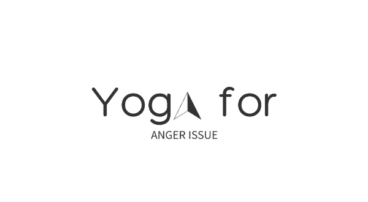

 Yoga For anger issue
Learn About Yoga
1.
Child's balasana (bālāsana) बालासन
Category:Prone / Forward Bend Difficulty:Beginner
Description
From a kneeling position, the toes and knees are together with most of the weight of the body resting on the heels of the feet. >
The arms are extended back resting alongside the legs. The forehead rests softly onto the earth. The gaze is down and inward.
Benefits
Gently stretches the hips, thighs, and ankles. Calms the brain and helps relieve stress and fatigue. Relieves back and neck pain when done with head and torso supported.
2.
Corpse shavasana (śavāsana) शवासन
Category:Supine / Neutral Difficulty:Beginner
Description
The body rests on the earth in a supine position with the arms resting by the side body.
The palms are relaxed and open toward the sky. The shoulder blades are pulled back, down and rolled under comfortably, resting evenly on the earth. The legs are extended down and splayed open.
The heels are in and the toes flop out. The eyes are closed. Everything is relaxed. The gaze is inward.
Benefits
Calms the brain and helps relieve stress and mild depression. Relaxes the body. Reduces headache, fatigue, and insomnia. Helps to lower blood pressure


3.
Tree vrikshasana (vṛkṣāsana) वृक्षासन bhagirathasana (bhagīrathāsana) भगीरथासन
Category:Standing / Balancing Difficulty:Intermediater
Description
From a standing position, one foot is rooted into the earth with the opposite heel rooted into the inner thigh with the toes pointing toward the earth.
The pelvis and the chin are tucked in. The hands come together at the heart in prayer position. The gaze is forward.
Benefits
Strengthens the legs, ankles, and feet. Improves flexibility in the hips and knees. Improves balance.
4.
Easy sukhasana (sukhāsana) सुखासन
Category:Seated / Neutral Difficulty:Beginner
Description
From a seated position, bring your knees into a simple cross legged pose. Both knees should be below the hips.
Place the hands on the thighs or knees and keep the spine straight.
Benefits
Opens the hips and stretches the knees and ankles. Strengthens the back. Calms the mind, reduces stress and anxiety. Improves circulation and blood flow to the pelvis.


5.
Bridge setu bandhasana (setu bandhāsana) सेतु बन्धासन
Category:Supine / Backbend Difficulty:Advanced
Description
Begin lying down on your back. Bend your knees, open your thighs to the side and bring your heels together.
Bring yourself up onto your elbows and drop onto the crown of your head. Cross your arms over your chest to pull down on the shoulders. Press into your heels and roll further onto the top of your head. Press your pelvis upward as you extend your legs straight.
Benefits
Releases the neck. Opens the belly and chest. Strengthens the spine